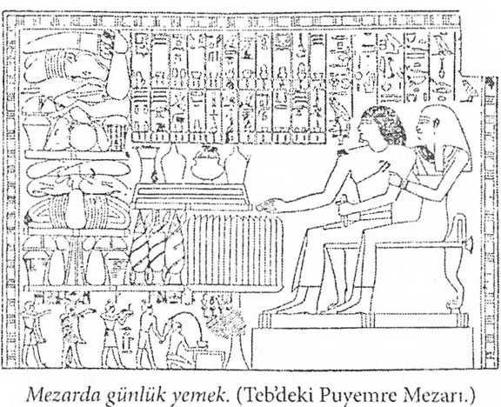

III.BAB
Belki de, ölümle karşılaşan insan ilk defa doğa üstü fikrine sahip olmuş ve onu görmekte olduğunun ötesinde umut etmek istemiştir. Ölüm ilk bilinmeyen oldu. Bu, insanı diğer sırların yolu üzerine çekti. Düşüncesini görünürden görünmeyene, geçiciden sonsuza, insani olandan ilahi olana yükseltti.
Fustel de Coulanges, La Cite Antique
Ölüler Kitabı, tanrıların eseridir. Amelineau şöyle demektedir: “Belki de bu, insan düşüncesinin meydana getirdiği en eski eserdir.” Sadece bir yüzyıldan biraz fazla bir süre önce, Nil Vadisinde Memphis, Teb ve Heliopolis’ten gelen papirüsler bulunmuştur. En önemlileri XVII., XXI., XXVI., ve XXXI. hanedanlık dönemlerine ait olanlardır. Bu inisiyasyon metinlerini ilk kez çözen büyük bilginlerin isimlerini burada anmamız önemli olur: W. Pleyte, W. Budge, L. Speleers, A. Erman, J. Vandier, A. Moret, Nina G. Davies, Jexuier, Samuel A. B. Mercer, E. Naville, H. Grapow, P. Le Page Renouf. Antik Mısır tapınaklarında inisiye olan Yunanlılar, bilgileri son derece gizli bir şekilde öğrendiklerinden, bize hiçbir açıklamada bulunmamışlardır.
Kısa bir süre önce Atina’da yayınlanan mükemmel bir çalışmada “Le Livre des Morts de l’Egypte Ancienne est Livre d’Initiatıon: Eski Mısır’ın Ölüler Kitabı, bir inisiyasyon kitabıdır” denmektedir. S. Mayassis, Nil Vadisinin en ünlü tapınaklarında inisiye olmuş Yunanlıları saymaktadır: Orphee, Osiris sırlarını biliyordu. P. Foucart “Tanrısal olan, Memphis’te ‘ışık mantosunu’ aldı ve ‘Ölüler Kitabının formülleri, Orphee’nin eğittiklerine en büyük sırların malzemesini hazırladı,” diye yazar. (Recherches sur la Nature et l'origine des Mysteres d’Elcusis: Eleusis Sırlarının Köken ve Niteliği Hakkında Araştırmalar.) Homer hiyeroglifleri okumasını biliyordu. Mayassis “Oxyrnynchos Papirüsünde, Ulisse’nin cehennemin eşiğinde Anubis’in, İsis, Osiris, Ptaah ve diğer Mısır tanrılarının gölgelerini (ruh veya görüntülerini) çağırmak için okuduğu sahte bir dua muhafaza edilmiştir,” diye yazmaktadır. Bazı bilginler İlyada şairinin Mısır’da yaşadığını, diğer bazıları da Teb’de, o yüz kapılı şehirde doğduğunu yazmaktadırlar. Piramitlerin gölgesi ile insan gölgesi arasındaki oranı hesaplayarak piramitlerin yüksekliğini ölçen Thales’i de sayalım. Solon Sais’te kaldı; firavun Amasis, Pythagore’u Memphis rahiplerine tavsiye etti. Laerce’de okuduğumuza göre “Pythagore, tapınakların en kutsalına girdi, rahiplerce inisiye edildi, tanrılar ve ruhun ölümsüzlüğüyle ilgili değişmez gerçekleri tanıdı; gizliliğin mührü altında, dünyanın yaratılışının nasıl olduğunu bildi.” Jambilique’in yazdığı “Pythagore’un Hayatı”nda şöyle denilmektedir: “Pythagore, Mısır’da, tapınaklara büyük bir gayretle devam etti. İlişkisi olan rahiplerin hayranlık ve sevgisini kazandı, hiçbir sözlü öğretiyi ihmal etmeksizin, her şeyi çok çalışarak öğrendi. Bütün rahipleri ziyaret ederek her birinin sahip olduğu bilgeliği öğrenip yararlandı. Cambyse’ın ordularınca esir alınıncaya kadar Mısır’ın tapınaklarında kalıp, yirmi yıl boyunca tanrıların bütün ayinlerinde inisiye oldu.” Firavunların çifte krallığında bir süre kalarak yalnız inisiyelerin katılabileceği törenlere kabul edilenlerden Democrite’i, Mısırlılar arasında on üç yıl kalan Platonu, Cnide’den gelen astronom Eudoxe’u, Mısır’ın hermetik edebiyatını ana diline çeviren Hermes Trismogiste’i sayabiliriz. Son olarak, E. Guirmet’nin yazdığına göre Osiris ve Dionysos sırlarına inisiye olmuş olan Apollon’un büyük rahibi Plutargueı; hiyerogliflerin çevirisini yapabilen ve onların gizli anlamlarını bilen Plotin’i; E. de Rouge’un bildirdiğine göre, “Mısır rahibi, duasında andığı ululuğa bürünüyor, o tanrının karakterini düşlüyor; inisiyasyonla öğrendiği tanrısal vasıfları kapsayan kutsal sözlerden yararlanıyordu. Şu isimli (ölünün ismi) Osiris... hitabı, buradan gelir...” diyen Jambiligue’i de zikretmemiz gerekmektedir (son hitap cenaze ayinleri sırasında kullanılır).
Ölüler Kitabı, Bir Dua Kitabıdır
Bilinmeyen yolculuğunda ölünün ruhuna yardımcı olmak için, mezarın son kapısı da mühürlenmeden önce, ölüm ayinini yöneten rahip mumyanın yanına inisiyasyonlara göre yazılmış bir papirüsü koyar. Bu papirüse “Ölüler Kitabı, Güneş İlahileri Kitabı, Gizli Evin Kitabı, Kapılar Kitabı, Teb’de çok gözde olan Nefes Alma Kitabı veya Douat’ta Olanın Kitabı” denir. Bu papirüse gecenin başlangıcında, Ranın alt dünyadaki sayısız düşmanlarına galip gelişinde okunan dualar ve büyülü, kurtarıcı formüller kopya edilmiştir. Bildiğimiz ilk ölüler kitabı 453 babdan az olmayan ve piramitlere adanmış olan metindir. Bu metinler çok sonraları, ancak Psammetique’in saltanatı sırasında, M.Ö. VII. yüzyılda 165 bab halinde kısaltılmıştır. Bu karşılaştırmalı metnin en iyi örneği, Torino’daki Eski Mısır Müzesinde korunan 20 metre boyunda bir papirüstür. Bu papirüs ilk kez, 1842 yılında Bunsen’le birlikte Mısır ve Nübyada araştırma yapan ve her zaman otorite sayılan, bir çok eseri derleyen Lepsius tarafından yayınlanmıştır. Lepsius, tabutların iç yüzünü süsleyen çok sayıda mezar metnini de (textes de sarcophages) tercüme etmiştir. Jean Capart (Brüksel, Kraliçe Elizabeth Mısır Vakfı), bu yazıların tek bir defada tertib edilmediğini hatırlatmaktadır. Bunlar, Mısır’ın çeşitli bölgelerinden, birbirinden çok farklı tabakalardan, ilkel Mısır dinsel düşüncelerinden gelmiş doktrinleri birleştirmeye çalışan tanrıbilimcilerin eserleridir. Mısır’daki Eski Eserleri Araştırma Direktörü Mariette’in yerini alan G. Maspero’nun çalışmalarını da anmalıyız. Gizli odalarında Mısır’ın bilinen en eski metinlerinin bulunduğu Sakkara’daki Ounas Piramidi’nin açılışını, Nil’in öbür kıyısında yaşayanların Teb’inin karşısındaki kraliçe Hatcheshpout’un ölüm tapınağındaki gizli kral mumyaları sığınağının çok yankı uyandıran keşfini ona borçluyuz.

İlahiler ve Ayin Yöntemleri
Ölüler Kitabı, iki yüz civarında büyülü söz topluluğu veya Mısır bilimcilerinin ifadesini kullanırsak “Bab” içermektedir. Bunların bazıları pek uzun ve çok eski, bir bölümü ise birkaç satırdan ibarettir. Bunların bilinmesi, ölüye geçmek zorunda olduğu Douat’ın oniki bölgesindeki maceralı yolculuğu sırasında yardımcı olacak, tapınak kapılarının ve kentlerin koruyucusu tanrıları tanımasını, bazıları Osirise Dua (CXV1II. Bab) gibi olan bu yakarışlarla onların iyi etkilerini çekmesini ve özellikle de çok sayıdaki yırtıcı, sinsi, kötü ruhun fenalıklarından veya isimleri, belleği, iç organları yiyen, sürekli ölüler aleminin ulularının gölgesinde yaşayan yılan şeytanlara yakalanmamasını sağlayacaktır.
Ölüler Kitabının bablarının okunuşu, ayine özgü temizlik halindeki rahiplerce yapılıyor, bütün cenaze töreni boyunca ölünün mumyasına dönük olarak kutsal metinler okunuyordu. S. Mayassis “Sırlar ve İnisiyasyon” adlı kitabında, “bu okuma inisiye olmamış ruhun dünyayı terk ettiği sırada aceleye getirilmiş bir inisiyasyon benzeri idi,” diye yazmıştır; bazı bölümlere duanın nasıl okunacağı, bazı güçleri taşıyan büyülü araçlardan nasıl faydalanılacağı hakkında kısa notlar eklenmiştir ki bize alışılmışın dışında gelen bu şeylerin gerçek anlamına asla erişemeyeceğiz.
Ölüler Kitabı’nın I.’den XIV.’ye kadar olan bölümleri, ölüleri “aydınlanmış mumyalarının” öbür aleme gireceği sırada cenaze törenlerine hazırlar. Ölmüşler geleceklerinden, kendilerini bekleyen çalışma ve sevinçten kuşkuludurlar ve ölmeden önce akrabalarının veya dostlarının sedir yağıyla ovulmuş ve ölüler için çalışacak olan küçük büyülü heykelleri, tıpkı Nil Vadisi’nde yapıldığı gibi Mutlu Tarlalarda yaşamak için ekecekleri arpayı ve buğdayı tabuta koymaları için önlem alırlar. Bu konuda sanırız ki yiyeceklerin öbür dünyadaki önemini vurgulamak uygun düşer.
Lord Carnarvon’un, Toutankhamon’un ölüm sarayında ünlü altın “Lahitler Salonu” yanındaki bir depoda, Teb’in Amon topraklarından gelmiş otuz altı büyük şarap küpü, üçyüz elli litre zeytinyağı, şeffaf vazolar içinde koku ve kozmetikler, çeşitli meyvelerin konduğu yüz on altı sepet bulduğu zaman şaşkınlıktan gözleri açılmıştı. Büyük bir olasılıkla firavunun açlığını gidermek için, çok miktarda beyaz ekmek bulunması da gerekiyordu: Psen-shens-khenfu-hbennu ekmekleri! Bunlara şaşırsak da, ölüler daha yaşamlarını sürerken bile Osiris’te yeniden doğanlar haline gelip sonsuza kadar o halde kalacakları zaman, hiç de perhiz yapmak zorunda kalmak istemiyorlardı. Bu sıradan hazırlığın dayandığı temeli kanıtlamak için, panter postu giymiş dua okuyucunun birçok defa tekrarladığı “ışıktan ve doymuş”, “Osiris’in mezar takdimeleri ile doymuş”, “ekmek, bira ve Ra’nın kayığında kızartılmış tavuk etiyle doymuş” olacaklarını, Osiris’in huzurunda her gün yiyip içebileceklerini işitmenin ölüleri mutlu kıldığını not etmek yeter. Onlar, gökyüzünün dört örtüsünün gerisinde, Göksel Nil’in, Işıklı Ruhlar’ın mutlu bölgesinde “bir parça tavuk eti ile Mısır’da yüz bin yıl saltanat sürmüş firavunlar ve dünyaları yaratan tanrılar arasında güçlerini yeniden kazanmanın iyi bir şey olduğunu” rahibin okuduğu ilahide duyunca seviniyorlardı.
Anubis solda, tanrıların katibi Thot sağda, ölmüş firavunu Mısırlıların Pa-douait dedikleri mezarın tapınma salonunda tanrısal kutsama aracılığı ile bol sularla yıkıyorlar. Bu Tapınma Salonu tapınaklarda da bulunuyordu. Firavun, saltanatı sırasında “Tanrıların Oğlu” sıfatıyla orada, nitelikleri çok kutsal sayılan ve “bazı sırları bir tek kendisi bilen kher heb rahibi” tarafından kutsanmıştı. (Ritüel du Culte guolidien :Dinin Günlük Ayinleri, A. MONTET.)
Sonsuza kadar yaşamak söz konusu olunca, bu “iyi yaşamak” arzusu küçümsenecek bir şey midir? Işıklı bir ruh haline gelineceği ne kadar bilinirse bilinsin, ölülerin en az obur, en az açgözlü olanı bile, rahip milyonlarca yıllık gelecek yaşamında, Mutlular arasında katı ve sıvı yiyeceklerin bolluğuna değinince, kendini daha rahat hissediyordu. Sonuçta, Eski Mısırlılar’ın inançları buydu...
Yiyecek endişelerini, Amenti bölgesinin kuşkularını duyduktan sonra, ölüler kalplerindeki pislikleri atmak için yapmaları gereken şeylerle uğraşırlar ve uygun dualarla bunu başaracaklardır. Ha'yı yücelteceklerdir (XV. Bab).
J. Caparta göre “Ölüler Kitabının XVI. Bab’ı dünyanın yaratılışını anlatır. Bandan sonra XXI. Babdan XXX. Baba kadar, ölüye hiçbir zaman ‘ne çürüyecek, ne kokacak’ yeni bir bellek kazanmak için ‘Tanrısal Alt Dünyada ağzının gücünü’ yeniden bulması için, ‘iç organlarının derinliklerinden kalbini sökmek’ adına birbirleriyle çekişen Heliopolis tanrılarının büyülerinden sıyrılmak için gerekli yöntem ve formüller açıklanır. Gökyüzünün Kapıları önünde ‘Anubis’in, bacaklarını kuvvetlendirmesi için okunacak XXVI. Bab’ı hatırlayacaktır. (G. Kolpaktchy çevirisi). XXX. Bab, CXXV. Bab’da tekrarlanacak olan, ilk yargılamanın ne olacağını anlatır. Bu, bir bakıma, büyük ruh tartılması (psychostasie) sahnesinin tekrarıdır. Ölünün pislikle beslenen, yakıp bitirici ateş tüküren sekiz tane timsah başlı şeytandan kendini korumayı bilmesi için, rahip tarafından XXI. Bab’dan XLI. Bab’a kadar okunacaktır. Ölünün kendisine öğretilen büyülü afsunları kesinlikle hatırında tutması gerekmektedir. Onu gözleyen kötü ruhları korkutmak için dualarını haykırmalıdır. XLII.den XLVII.’ye kadar olan Bab’ların konusu, ölünün organlarının tanrısallaştırılmasıdır.’ Ölü, ‘omurgam Seth’in, erkeklik uzvum Osiris’in olacak’ der (Kolpaktchy çevirisi). Ölünün kadavrasının çürümeyeceğini, Osiris gibi bedeninin parçalanmayacağını, ancak “ışığa doğru yükselebilen ruhsal bir beden” haline geleceğini ona açıklayan ilahileri iyi bilmesi önemlidir. XLVIII. ve XLIX. bölümler X. ve XI. yi tekrarlar. L. LXII. bablar sayesinde ruh yeniden "hayat nefesini” bulur; önünde yer ve göğün kapılarının açıldığını ve aynı zamanda Osiris’in mekanı olan Göksel Nil’in sularını görür, “suya sahip olmam için gerekeni yap” der, Osiris’e. LXIVUen LXXV.’ye kadar olan bablar ruhun güneşe nasıl yükseleceğini, İsis’in bağrında nasıl gençleşeceğini, “anası olan” gök mekanında nasıl yeniden doğacağını (S. Mayassis), gökte olan Heliopolis’te tanrıların yanında oturmaya nasıl kabul edileceğini ölüye anlatır. Bundan sonra LXXVI. Bab’dan ölüye, kendi kendini değiştirebilmesine yarayan “değişme formüllerini” seçmesi tavsiye edilir. Horus Şahini veya soğuk bölgelerin Işıklı Ruh’u olabilecektir; sıcaklık ve ışık olacak, sonsuz kozmos içinde titreşim olacaktır.
“Değişim formülleri” ölünün yeni bir bilgelik kazanabilmesi için, okuyucu rahip tarafından tekrarlanacaktır. Böylece ruh, onu doğru bularak mutlular arasına ayıracak veya atılmışların evrenine gönderecektir. Ölü, mahkeme önüne çıkabilecektir; Ra’nın güneş kayığında yer alabilecektir. Jambilique “Mısırlıların Sırları” adındaki yapıtında şöyle der: “Bu güneş gemisi üzerinde yer alıp yolculuk eden, alemi yöneten güçlerin bir görünüşünü simgeler”; “tanrıların çift yaşamı’nı simgeleyen yılanın içinden (Maspero), oniki kadın iplerle aşağı dünyaya çekerken, ruhun geçebilmesi için : “Ruh yılanın vücuduna, karanlıklara yönelik kuyruk tarafından girmekte ve her zaman ışık yönünde olan ağızdan dışarı çıkmaktadır.” Böylece sonsuzluk ve reenkarnasyonun sembolü olan yılanı “geçtikten” sonra, yeni büyülü güçler kazanabilecektir. Ölü öbür dünyaya girdiğinde, her yerde “eski kıyametlerin” izlerini görecektir. Ölüler Kitabında, “dünyaların yıkılışından” önce gerçekleşen “gökteki savaşlar” söz konusudur.
Bu geleneğin ısrarla tekrarlanması, “zamanın uçlarında” korkunç yeryüzü karışıklıkları olduğunu doğrular değil midir? Ölüler Kitabının açıklamaları, Babil Tufanı’nın, Gılgamış Destanı’nın, Tevrat’taki Sodom ve Gomorra’nın benzeridir. O, Evren Yıkıcı Titanlar kimlerdi? Başka bir gezegenden gelen varlıklar mı, yoksa atom bombasının varlığını ve kullanışını daha o zamandan bilen, bu dünyanın insanları mı?
Sothiaque : Sothio, Sirius yıldızının Mısır dilindeki adı. Eski astronomide 1460 yıllık bir dönemi belirler. İngilizce’deki karşılığı, burçlar anlamına da gelen “zodiac” kelimesidir.
CL.den CXXIV.’ye kadar olan bablar, ölünün Batının sırlarının ve tanrıların yazıcısı olan Thot’un Gizli Kitapları’nın sırları bilgisini kolaylaştırmak için okunur. Bu da Osiris’in krallığı olan Ra Setau’nun önüne gelmeden “Işığın Yedi Derecesi”ni geçebilmesi içindir. CXXV. Bab, resmi diriliş ve yükseliş ile sonuçlanacak temizleyici itirafların ünlü yargılanma ve ruhun tartışıldığı kısımdır. O zamana kadar ölünün ruhu, fiziksel ve ruhsal bedenleri, mutluluk alanlarını (Champs Elyseens) hayal meyal görmüştür.
IV. Ramses’in ölüm salonunda, Osiris “Batının Boğası"Skarabe’nin meydana getirdiği yuvarlak nesne içinde oğlu Horus’u oluşturuyor. Bu yuvarlak, yeniden doğuşun hem sembolü, hem de kalıbıdır. İsis ve Nephtis, Skarabe’nin yuvarlağını tutuyorlar. Böylece her ölünün ruhu, İsis’ten gelen tabiatının sırrı sayesinde, ruh Horus haline geleceği ve “ Samanyolu’nun” ışığı olan kendi sothiaque ışığı içinde parlayacağı gökyüzünde ebediyen yaşayabilmesi için yeniden doğacaktır.
Oraya henüz hiç nüfuz edememiştir. Bundan böyle, tanrılar mahkemesinde temize çıktıktan sonra, Mutluların göksel evreniyle bütünleşebilecek, gerçekten yalnız kendisinin olan sonsuz adıyla çağrılabilecek ve doğası, tanrıların doğasına eşit olacaktır. Ancak, metnimizin anlaşılabilir olması için daha ileride CXXV. Babdan daha ayrıntılı olarak söz edeceğiz.
CXXVI. CXXXIX. bablar: Ruh Osiris olduğu ve son mükemmeliyete eriştiği zaman, yaratıcı ışıkta ışığıyla eriyip zaman ve mekan boyunca sonsuz, kendi ışığında mutlu, bozulamaz olduğu ve bu ışıkla Osiris’in Evindeki gökte parlayacağı zaman söyleyeceği formülleri hatırlamalıdır. Bir veya daha fazla bab, muskalarla birlikte mumyanın lahitine konan Ölüler Kitabının bu kısa özetine bir sonuç olarak CXC.de son babın tamamını Kolpaktchy’nin çevirisinden aktaralım: Bu Kitap, tanrısallaşmış ruhun, Ra’nın bağrındaki mükemmelleşmesini konu alır ve onu Osiris’in gözünde yüceltir. Amenthi'nin Efendisinin gözünde güçlü kılar ve tanrıların hiyerarşisinde saygıya layık kılar.
Bu kitap, Douat’ın esrarlı yerlerinin sırlarını açıklar, alt dünyanın sırlarına inisiye olmakta bir rehber görevi görür. “Bu kitabı okurken sana ve Rahip Kherheb’e yakın olanlardan başka, hiçbir insan varlığının seni görmesine izin verme... içine yıldızlı dokumalar gerilmiş bir odaya kapan.”
O zaman bu metinlerin, kendi için okunacağı her ölünün ruhu yaşayanlar arasında, parlak gün ışığı içinde dolaşabilecek; tanrılar arasında güçlü olacak... ve Tanrılar onu yokladıktan sonra, ölüyü eşitleri olarak tanıyacaklar. Gerçekte bu kitap çok gizli ve çok derin bir sırdır...
Bu Kitap, Gerçekten de
Çok Büyük ve Çok Derin Bir Sırdır
Ölüler kitabının gerçekten ne olduğunu kim bilecek? Onca sembolün gerçek anlamını bize kim açıklayacak? Firavunların Mısır’daki tapınaklarında inisiye olanların sayısı çoktu; ancak, öğrendiğini anlatan hiç olmadı. Pseudo Cyprianus’u dinleyelim: “Yirmi yaşıma gelince, Memphis’te, Mısırlılar’ın gözü önünde, derinliğine asla varılamayacak kutsal şeyler tanıdım.” (Confessis, 1758)
Jambilique’in, Mısırlılar’ın Sırları adlı kitabını, P. Quillard’ın çevirisinden tekrar okuyalım: “Hayal gücünden veya söylendiğini duyduğun şeylerden gelebilecek sembollerin tasvirinden düşünceni ayır; sadece entelektüel gerçeklere bağlan.”
Lucien’in “l’Assemblee des Dieur: Tanrılar Topluluğu” adlı yapıtının E. Chambery çevirisinde şöyle bir ifade vardır: “Mısırlılar’ın dini gizemlerle doludur, inisiye olunmadan ve konuyu yakından bilmeden asla onunla alay etmememiz gerekir. Gerçekten de tanrıların tanrılar, köpek başlıların köpek başlı olduğunu bilmek için bu sırları tanımak çok gereklidir.” Evet, gerçekten de Ölüler Kitabı çok büyük ve derin bir sırdır.